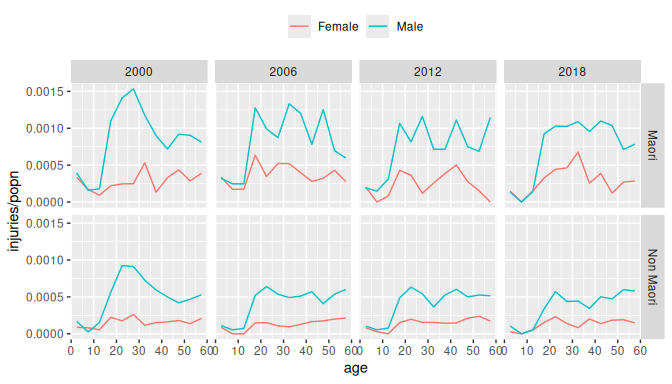
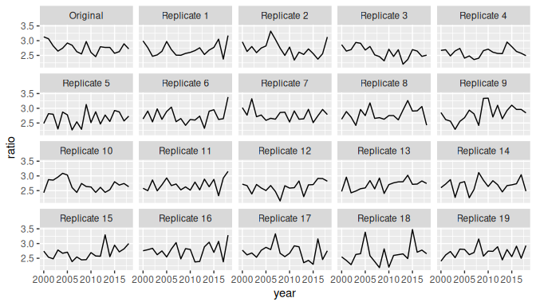

1 Introduction
(= “Bayesian” + “age”) implements Bayesian hierarchical models for rates, probabilities, and means. The rates, probabilities, and means are cross-classified by variables such as age, sex, region, and time. Models in can be used for estimation and for forecasting.
models are built out of smaller submodels. A model for mortality rates, for instance, might contain submodels describing how rates vary over age, sex, and time.
Internally, draws on package TMB for fitting. TMB is fast and can handle large datasets.
This vignette introduces the main features of , using data on injuries as a case study.
For more details, see the website. The Mathematical Details article, for instance, provides mathematical descriptions of the models.
2 Preliminaries
2.1 Packages
We begin by loading the packages that we will need for analysing the injuries data. Loading automatically loads package rvec, which contains functions for working with draws from probability distributions. Package poputils contains functions for working with demographic data. Packages dplyr and tidyr are core tidyverse packages for manipulating data. We use ggplot2 for graphics.
2.2 Data
We analyse a dataset called nzl_injuries. The dataset is included in . It contains counts of fatal injuries and population in New Zealand, classified by age, sex, ethnicity, and year.
head(nzl_injuries)
#> # A tibble: 6 × 6
#> age sex ethnicity year injuries popn
#> <fct> <chr> <chr> <int> <int> <int>
#> 1 0-4 Female Maori 2000 12 35830
#> 2 5-9 Female Maori 2000 6 35120
#> 3 10-14 Female Maori 2000 3 32830
#> 4 15-19 Female Maori 2000 6 27130
#> 5 20-24 Female Maori 2000 6 24380
#> 6 25-29 Female Maori 2000 6 24160
nzl_injuries |>
filter(year %in% c(2000, 2006, 2012, 2018)) |>
ggplot(aes(x = age_mid(age), y = injuries / popn, color = sex)) +
facet_grid(vars(ethnicity), vars(year)) +
geom_line() +
xlab("age") +
theme(legend.position = "top",
legend.title = element_blank())
3 Specifying a model
3.1 Functions for specifying models
We specify a model where counts of injuries are treated as a random draws from Poisson distributions. The expected number of injuries varies with different combinations of age, sex, ethnicity, and year.
mod <- mod_pois(injuries ~ age * sex + age * ethnicity + year,
data = nzl_injuries,
exposure = popn)Binomial models are specified with function mod_binom() and normal models with function mod_norm().
3.2 Model structure
The resulting model has the following structure:

The number of injuries occurring within each combination of age, sex, ethnicity, and time reflects (i) the population at risk and (ii) an underlying rate that in is referred to as .fitted. The expected value for .fitted is obtained by summing up values for the intercept, age effect, sex effect, and so forth. The actual value of .fitted can diverge from .expected: the amount of divergence is governed by the disp (dispersion) parameter.
The model terms are all given “prior distributions”. A prior distribution is a submodel capturing features of the unknown quantity or quantities being estimated. Possible features include the range within which the quantity is likely to fall, or the amount of smoothness expected in series of values. Priors distributions are a distinctive feature of Bayesian methods.
3.3 Printing the model object
Printing a model object provides information on its structure:
mod
#>
#> ------ Unfitted Poisson model ------
#>
#> injuries ~ age * sex + age * ethnicity + year
#>
#> exposure: popn
#>
#> term prior along n_par n_par_free
#> (Intercept) NFix() - 1 1
#> age RW() age 12 12
#> sex NFix() - 2 2
#> ethnicity NFix() - 2 2
#> year RW() year 19 19
#> age:sex RW() age 24 24
#> age:ethnicity RW() age 24 24
#>
#> disp: mean = 1
#>
#> n_draw var_time var_age var_sexgender
#> 1000 year age sexThe table in the the middle of the printout above shows the default prior distribution assigned to each term. We return to priors in Section 6.
The bottom row of the printed object shows various model settings. n_draw is the number of random draws produced by extractor functions, which we discuss in Section 5. var_time, var_age, and var_sexgender are the names of the variables in nzl_injuries that represent time, age, and sex or gender. If fails to correctly identify these variables, they can be identified using functions such as set_var_time().
4 Fitting a model
4.1 fit()
Function mod_pois() specifies a model, but does not actually estimate any of the unknown quantities in the model. For that, we need function fit().
mod <- mod |>
fit()4.2 Reprinting the model object
The printout for a fitted model differs from that of an unfitted model.
mod
#>
#> ------ Fitted Poisson model ------
#>
#> injuries ~ age * sex + age * ethnicity + year
#>
#> exposure: popn
#>
#> term prior along n_par n_par_free std_dev
#> (Intercept) NFix() - 1 1 -
#> age RW() age 12 12 0.71
#> sex NFix() - 2 2 0.11
#> ethnicity NFix() - 2 2 0.36
#> year RW() year 19 19 0.09
#> age:sex RW() age 24 24 0.43
#> age:ethnicity RW() age 24 24 0.13
#>
#> disp: mean = 1
#>
#> n_draw var_time var_age var_sexgender optimizer
#> 1000 year age sex nlminb
#>
#> time_total time_max time_draw iter converged message
#> 0.80 0.32 0.38 11 TRUE relative convergence (4)Among other things, a new row appears at the bottom of the printout, providing information about the fitting process. The most important value piece of information is whether the calculations have converged.
One thing the printout does not include is estimates for the model parameters. The reason for excluding them is that there are too many. Statistical models in other R packages often focus on one or two key parameters, such a parameter measuring a treatment effect. In contrast, models in often estimate values for thousands, or tens of thousands, of parameters.
To obtain the estimates from a fitted model, we need specialised extractor functions, which we discuss next.
5 Extracting outputs
5.1 Extractor functions
The two most important extractor functions in are augment() and components(). Both of these are generic functions that work on many sorts of R objects (see here and here).
5.2 augment()
augment() returns the original dataset plus some additional columns of estimated values,
aug <- mod |>
augment()
aug
#> # A tibble: 912 × 9
#> age sex ethnicity year injuries popn .observed
#> <fct> <chr> <chr> <int> <int> <int> <dbl>
#> 1 0-4 Female Maori 2000 12 35830 0.000335
#> 2 5-9 Female Maori 2000 6 35120 0.000171
#> 3 10-14 Female Maori 2000 3 32830 0.0000914
#> 4 15-19 Female Maori 2000 6 27130 0.000221
#> 5 20-24 Female Maori 2000 6 24380 0.000246
#> 6 25-29 Female Maori 2000 6 24160 0.000248
#> 7 30-34 Female Maori 2000 12 22560 0.000532
#> 8 35-39 Female Maori 2000 3 22230 0.000135
#> 9 40-44 Female Maori 2000 6 18130 0.000331
#> 10 45-49 Female Maori 2000 6 13770 0.000436
#> # ℹ 902 more rows
#> # ℹ 2 more variables: .fitted <rdbl<1000>>, .expected <rdbl<1000>>The additional columns are .observed, .fitted, and .expected.
aug |>
select(.observed, .fitted, .expected)
#> # A tibble: 912 × 3
#> .observed .fitted .expected
#> <dbl> <rdbl<1000>> <rdbl<1000>>
#> 1 0.000335 3e-04 (0.00023, 0.00039) 3e-04 (0.00026, 0.00034)
#> 2 0.000171 7.8e-05 (5.7e-05, 1e-04) 7.5e-05 (6.2e-05, 9.1e-05)
#> 3 0.0000914 1e-04 (7.6e-05, 0.00014) 1e-04 (8.7e-05, 0.00012)
#> 4 0.000221 0.00041 (0.00031, 0.00053) 0.00045 (4e-04, 5e-04)
#> 5 0.000246 0.00038 (0.00029, 0.00048) 4e-04 (0.00036, 0.00045)
#> 6 0.000248 0.00035 (0.00027, 0.00045) 0.00037 (0.00032, 0.00041)
#> 7 0.000532 0.00038 (0.00029, 0.00049) 0.00036 (0.00032, 0.00041)
#> 8 0.000135 0.00031 (0.00024, 0.00041) 0.00034 (3e-04, 0.00039)
#> 9 0.000331 0.00033 (0.00026, 0.00044) 0.00033 (0.00029, 0.00038)
#> 10 0.000436 0.00031 (0.00024, 4e-04) 3e-04 (0.00027, 0.00035)
#> # ℹ 902 more rowsIn a Poisson model with exposures,
-
.observedis a “direct” estimate of the rate, obtained by dividing the the outcome variable by the population at risk; -
.expectedis a model-based estimate of the rate, based purely on model predictors (eg age, sex, time); and -
.fittedis a model-based estimate of the rate that is a compromise between.observedand.expected.
5.3 components()
components() is used to extract values for higher-level parameters. It returns values for all the parameters.
comp <- mod |>
components()
comp
#> # A tibble: 89 × 4
#> term component level .fitted
#> <chr> <chr> <chr> <rdbl<1000>>
#> 1 (Intercept) effect (Intercept) -1.6 (-3.4, 0.033)
#> 2 age effect 0-4 -1.7 (-3.4, 0.13)
#> 3 age effect 5-9 -2.9 (-4.7, -1.1)
#> 4 age effect 10-14 -2.5 (-4.2, -0.66)
#> 5 age effect 15-19 -0.85 (-2.6, 0.95)
#> 6 age effect 20-24 -0.77 (-2.5, 1.1)
#> 7 age effect 25-29 -0.87 (-2.6, 1)
#> 8 age effect 30-34 -0.93 (-2.6, 1)
#> 9 age effect 35-39 -0.93 (-2.8, 0.99)
#> 10 age effect 40-44 -0.93 (-2.8, 0.98)
#> # ℹ 79 more rowsThe output from components() may require a bit of tidying,
age_effect <- comp |>
filter(term == "age",
component == "effect") |>
select(age = level, .fitted)
age_effect
#> # A tibble: 12 × 2
#> age .fitted
#> <chr> <rdbl<1000>>
#> 1 0-4 -1.7 (-3.4, 0.13)
#> 2 5-9 -2.9 (-4.7, -1.1)
#> 3 10-14 -2.5 (-4.2, -0.66)
#> 4 15-19 -0.85 (-2.6, 0.95)
#> 5 20-24 -0.77 (-2.5, 1.1)
#> 6 25-29 -0.87 (-2.6, 1)
#> 7 30-34 -0.93 (-2.6, 1)
#> 8 35-39 -0.93 (-2.8, 0.99)
#> 9 40-44 -0.93 (-2.8, 0.98)
#> 10 45-49 -0.99 (-2.8, 0.95)
#> 11 50-54 -0.96 (-2.9, 1.1)
#> 12 55-59 -0.95 (-2.8, 1.1)5.4 Posterior samples
The output from a Bayesian model is draws from the “posterior distribution” for unknown quantities. The posterior distribution is a probability distribution that describes what is implied about the unknown quantities in the model after the combining model assumptions (including priors) and the data.
5.5 Rvecs
Draws from probability distributions can be awkward to work with, so uses a special type of vector called an “rvec”, implemented by package rvec. An rvec contains multiple draws, but tries to behave as much as possible like a standard vector. The printout of .fitted and .expected in the aug object above shows medians and 95% credible intervals.
5.6 Graphing outputs
The best way to understand output from a fitted model it to graph it. We first need to prepare data for the graph. We select values for 2018 and use the draws_ci() function from rvec to create 95% credible intervals.
data_plot <- aug |>
filter(year == 2018) |>
mutate(draws_ci(.fitted))
data_plot |>
select(starts_with(".fitted"))
#> # A tibble: 48 × 4
#> .fitted .fitted.lower .fitted.mid .fitted.upper
#> <rdbl<1000>> <dbl> <dbl> <dbl>
#> 1 0.00023 (0.00017, 0.00029) 0.000173 0.000225 0.000290
#> 2 5.8e-05 (4.1e-05, 8e-05) 0.0000411 0.0000582 0.0000803
#> 3 8.7e-05 (6.5e-05, 0.00011) 0.0000649 0.0000871 0.000115
#> 4 0.00036 (0.00027, 0.00046) 0.000274 0.000360 0.000457
#> 5 0.00035 (0.00027, 0.00043) 0.000270 0.000346 0.000428
#> 6 0.00032 (0.00025, 4e-04) 0.000249 0.000320 0.000404
#> 7 0.00034 (0.00026, 0.00044) 0.000258 0.000338 0.000444
#> 8 0.00027 (0.00021, 0.00035) 0.000206 0.000274 0.000352
#> 9 0.00028 (0.00022, 0.00037) 0.000215 0.000281 0.000372
#> 10 0.00024 (0.00018, 0.00031) 0.000179 0.000236 0.000312
#> # ℹ 38 more rowsWe then use ggplot() to visualise the outputs. A good way to display output is to use geom_ribbon() to plot credible intervals, geom_line() to plot model-based point estimates, and geom_point() to plot direct estimates.
ggplot(data_plot, aes(x = age_mid(age))) +
facet_grid(vars(sex), vars(ethnicity)) +
geom_ribbon(aes(ymin = .fitted.lower,
ymax = .fitted.upper),
fill = "lightblue") +
geom_line(aes(y = .fitted.mid),
color = "darkblue") +
geom_point(aes(y = .observed),
color = "red") +
xlab("age")
6 Priors
6.1 Priors in Bayesian models
In a Bayesian model, every parameter needs to be assigned a prior distribution. When the data provides abundant information about the parameter, the particular choice of prior distribution usually has little effect on the ultimate estimates for the parameter. But when the data provides only limited information, different priors can lead to very different estimates. The choice of prior is particularly important when forecasting, since the data provides provides only indirect information about the future.
6.2 Current priors in bage
help(priors) produces a list of priors that have been implemented in .
Some examples:
-
NFix(). Each element of the term being modeled is drawn from a normal distribution with mean0, and standard deviationsd. By default,sdis 1. -
N(). LikeNFix(), butsdis estimated from the data. -
RW(). The elements of the term being modeled follow a random walk. This is appropriate for terms involving time and age, where neighboring elements are strongly correlated. -
AR1(). First-order autoregressive process. Suitable for time series that revert to a mean value.
6.3 Defaults
uses the following rules to assign default priors to a model term:
- if the term has less than 3 elements, use
NFix(); - otherwise, if the term involves time, use
RW(), with time as the `along’ dimension; - otherwise, if the term involves age, use
RW(), with age as the `along’ dimension; - otherwise, use
N().
Priors can be over-ridden using set_prior():
Replacing a prior deletes any existing estimates and returns a model to an ‘unfitted’ state.
is_fitted(mod)
#> [1] FALSESo we re-fit the model.
mod <- mod |>
fit()6.4 SVD-based priors
implements a special type of prior based on applying a singular value decomposition (SVD) to data from an international database. These SVD-based priors represent the age-sex patterns in demographic processes such as fertility, mortality, and labor force participation in a parsimonious way. The model below, for instance, uses SVD-based priors for age effects and age-time interactions in a model of regional fertility rates in Korea. Note that the number of free parameters (denoted n_par_free) for age and age:time in the printout below is much less than the total number of parameters (denoted n_par) for age and age:time.
mod_births <- mod_pois(births ~ age * region + age * time,
data = kor_births,
exposure = popn) |>
set_prior(age ~ SVD(HFD)) |>
set_prior(age:time ~ SVD_RW(HFD)) |>
fit()
mod_births
#>
#> ------ Fitted Poisson model ------
#>
#> births ~ age * region + age * time
#>
#> exposure: popn
#>
#> term prior along n_par n_par_free std_dev
#> (Intercept) NFix() - 1 1 -
#> age SVD(HFD) - 9 3 1.66
#> region N() - 16 16 0.03
#> time RW() time 13 13 0.46
#> age:region RW() age 144 144 0.57
#> age:time SVD_RW(HFD) time 117 39 1.89
#>
#> disp: mean = 1
#>
#> n_draw var_time var_age optimizer
#> 1000 time age nlminb
#>
#> time_total time_max time_draw iter converged message
#> 2.62 1.52 0.98 22 TRUE relative convergence (4)7 Covariates
The main predictors in a model are the variables, such as age and sex, that are used to classify the outcome. However, does allow additional variables in data to be used as predictors. We refer to these additional variables as covariates, and we add them to a model using function set_covariates():
mod_pois(births ~ age * region + age * time,
data = kor_births,
exposure = popn) |>
set_covariates(~ gdp_pc_2023 + dens_2020)
#>
#> ------ Unfitted Poisson model ------
#>
#> births ~ age * region + age * time
#>
#> exposure: popn
#>
#> term prior along n_par n_par_free
#> (Intercept) NFix() - 1 1
#> age RW() age 9 9
#> region N() - 16 16
#> time RW() time 13 13
#> age:region RW() age 144 144
#> age:time RW() time 117 117
#>
#> covariates: ~gdp_pc_2023 + dens_2020
#>
#> disp: mean = 1
#>
#> n_draw var_time var_age
#> 1000 time age8 Forecasting
Forecasts can be constructed by calling function forecast() on a model object. When the output argument of forecast() is "augment" (the default), forecast() produces values like those produced by augment().
aug_forecast <- mod |>
forecast(labels = 2019:2028)
names(aug_forecast)
#> [1] "age" "sex" "ethnicity" "year" "injuries" "popn"
#> [7] ".observed" ".fitted" ".expected"When the output argument is "components", forecast() produces values like those produced by components().
comp_forecast <- mod |>
forecast(labels = 2019:2028,
output = "components")
comp_forecast
#> # A tibble: 10 × 4
#> term component level .fitted
#> <chr> <chr> <chr> <rdbl<1000>>
#> 1 year effect 2019 -0.088 (-0.35, 0.16)
#> 2 year effect 2020 -0.082 (-0.39, 0.27)
#> 3 year effect 2021 -0.074 (-0.45, 0.29)
#> 4 year effect 2022 -0.066 (-0.5, 0.33)
#> 5 year effect 2023 -0.059 (-0.5, 0.36)
#> 6 year effect 2024 -0.061 (-0.52, 0.39)
#> 7 year effect 2025 -0.045 (-0.54, 0.41)
#> 8 year effect 2026 -0.039 (-0.58, 0.4)
#> 9 year effect 2027 -0.033 (-0.57, 0.42)
#> 10 year effect 2028 -0.021 (-0.57, 0.45)When the argument include_estimates is TRUE, the return value includes historical estimates. This is useful for plotting.
data_forecast <- mod |>
fit() |>
forecast(labels = 2019:2028,
include_estimates = TRUE) |>
filter(sex == "Female",
age %in% c("10-14", "25-29", "40-44")) |>
mutate(draws_ci(.fitted))
ggplot(data_forecast, aes(x = year)) +
facet_grid(vars(age), vars(ethnicity)) +
geom_ribbon(aes(ymin = .fitted.lower,
ymax = .fitted.upper),
fill = "lightblue") +
geom_line(aes(y = .fitted.mid),
color = "darkblue") +
geom_point(aes(y = .observed),
color = "red")
#> Warning: Removed 60 rows containing missing values or values outside the scale range
#> (`geom_point()`).
9 Imputation
automatically accommodates missing values in the outcome variables. We illustrate with a version of the injuries dataset where values for 2010–2014 are set to NA.
years_mis <- 2010:2014
injuries_mis <- nzl_injuries |>
mutate(injuries = if_else(year %in% years_mis, NA, injuries))We fit our exactly the same model that we use for the complete dataset.
mod_mis <- mod_pois(injuries ~ age * sex + age * ethnicity + year,
data = injuries_mis,
exposure = popn) |>
fit() creates a new variable, called .injuries containing imputed values for the missing outcomes.
mod_mis |>
augment() |>
filter(year %in% years_mis)
#> # A tibble: 240 × 10
#> age sex ethnicity year injuries .injuries popn .observed
#> <fct> <chr> <chr> <int> <int> <rdbl<1000>> <int> <dbl>
#> 1 0-4 Female Maori 2010 NA 12 (5, 20) 43440 NA
#> 2 5-9 Female Maori 2010 NA 3 (0, 7) 36340 NA
#> 3 10-14 Female Maori 2010 NA 3 (0, 8) 35520 NA
#> 4 15-19 Female Maori 2010 NA 14 (7, 23) 34960 NA
#> 5 20-24 Female Maori 2010 NA 12 (5, 20) 31060 NA
#> 6 25-29 Female Maori 2010 NA 8 (3, 14) 24000 NA
#> 7 30-34 Female Maori 2010 NA 8 (3, 14) 23180 NA
#> 8 35-39 Female Maori 2010 NA 8 (3, 14) 24260 NA
#> 9 40-44 Female Maori 2010 NA 7 (2, 12) 22660 NA
#> 10 45-49 Female Maori 2010 NA 6 (2, 12) 21730 NA
#> # ℹ 230 more rows
#> # ℹ 2 more variables: .fitted <rdbl<1000>>, .expected <rdbl<1000>>Rates estimates in years where the outcome is missing have wider credible intervals than rates estimates in years where the outcome is observed.
data_plot_mis <- mod_mis |>
augment() |>
filter(age == "20-24") |>
mutate(draws_ci(.fitted))
ggplot(data_plot_mis, aes(x = year)) +
facet_grid(vars(sex), vars(ethnicity)) +
geom_ribbon(aes(ymin = .fitted.lower,
ymax = .fitted.upper),
fill = "lightblue") +
geom_line(aes(y = .fitted.mid),
color = "darkblue") +
geom_point(aes(y = .observed),
color = "red") +
xlab("age")
#> Warning: Removed 20 rows containing missing values or values outside the scale range
#> (`geom_point()`).
If the value for exposure, size, or weights is missing, then the associated row from data is omitted from the likelihood, and no imputations for that row are made. Missing values for classifying variables are skipped over in the same way.
10 Data models
Many datasets in applied demography have some sort of measurement error: units within the target population are missed, for instance, or are double-counted. In , measurement error can be explicitly incorporated into the analysis by adding a “data model” (also known as a measurement error model) to the base model.
Consider, for example, as dataset where, because of errors in the data collection process, responses for females are expected to be inflated by 5% and responses for males are expected to be inflated by 6%. We might extend our base model as follows:
prob_under <- data.frame(sex = c("Female", "Male"),
mean = c(0.05, 0.06),
disp = c(0.02, 0.02))
mod_under <- mod |>
set_datamod_undercount(prob = prob_under) The current choice of data models in can be views by calling help(datamod).
11 Confidentialization
Data producers often confidentialize their data before they make it publicly available. The nzl_injuries dataset is one example. Statistics New Zealand has randomly-rounded the counts of injuries to multiples of 3.
To deal with confidentialization, we describe the confidentialization process to our model.
mod <- mod |>
set_confidential_rr3() |>
fit()The results from calling augment() now include a variable called .injuries with estimated values for the true, unrounded injury counts.
mod |>
augment()
#> # A tibble: 912 × 10
#> age sex ethnicity year injuries .injuries popn .observed
#> <fct> <chr> <chr> <int> <int> <rdbl<1000>> <int> <dbl>
#> 1 0-4 Female Maori 2000 12 12 (10, 14) 35830 0.000335
#> 2 5-9 Female Maori 2000 6 5 (4, 7) 35120 0.000171
#> 3 10-14 Female Maori 2000 3 3 (1, 5) 32830 0.0000914
#> 4 15-19 Female Maori 2000 6 7 (5, 8) 27130 0.000221
#> 5 20-24 Female Maori 2000 6 6 (4, 8) 24380 0.000246
#> 6 25-29 Female Maori 2000 6 6 (4, 8) 24160 0.000248
#> 7 30-34 Female Maori 2000 12 12 (10, 14) 22560 0.000532
#> 8 35-39 Female Maori 2000 3 4 (2, 5) 22230 0.000135
#> 9 40-44 Female Maori 2000 6 6 (4, 8) 18130 0.000331
#> 10 45-49 Female Maori 2000 6 6 (4, 8) 13770 0.000436
#> # ℹ 902 more rows
#> # ℹ 2 more variables: .fitted <rdbl<1000>>, .expected <rdbl<1000>>12 Model checking
12.1 Replicate data
A standard Bayesian approach to checking a model is to use the model to generate simulate data and see if the simulated data looks like the actual data. Function replicate_data() creates multiple sets of simulated data.
rep_data <- mod |>
replicate_data()
rep_data
#> # A tibble: 18,240 × 7
#> .replicate age sex ethnicity year injuries popn
#> <fct> <fct> <chr> <chr> <int> <dbl> <int>
#> 1 Original 0-4 Female Maori 2000 12 35830
#> 2 Original 5-9 Female Maori 2000 6 35120
#> 3 Original 10-14 Female Maori 2000 3 32830
#> 4 Original 15-19 Female Maori 2000 6 27130
#> 5 Original 20-24 Female Maori 2000 6 24380
#> 6 Original 25-29 Female Maori 2000 6 24160
#> 7 Original 30-34 Female Maori 2000 12 22560
#> 8 Original 35-39 Female Maori 2000 3 22230
#> 9 Original 40-44 Female Maori 2000 6 18130
#> 10 Original 45-49 Female Maori 2000 6 13770
#> # ℹ 18,230 more rowsComparing full datasets is difficult, so the usual strategy is to calculate summary measures that capture some important feature of the data, and compare those instead. Here we see if the model is properly capturing male-female differences in injury rates.
sex_ratio <- rep_data |>
count(.replicate, year, sex, wt = injuries) |>
pivot_wider(names_from = sex, values_from = n) |>
mutate(ratio = Male / Female)
sex_ratio
#> # A tibble: 380 × 5
#> .replicate year Female Male ratio
#> <fct> <int> <dbl> <dbl> <dbl>
#> 1 Original 2000 279 873 3.13
#> 2 Original 2001 276 846 3.07
#> 3 Original 2002 303 855 2.82
#> 4 Original 2003 330 873 2.65
#> 5 Original 2004 306 840 2.75
#> 6 Original 2005 300 876 2.92
#> 7 Original 2006 291 828 2.85
#> 8 Original 2007 321 843 2.63
#> 9 Original 2008 339 864 2.55
#> 10 Original 2009 303 900 2.97
#> # ℹ 370 more rowsWe graph the results and see if the original data looks like it was drawn from the same underlying distribution as the simulated data.
ggplot(sex_ratio, aes(x = year, y = ratio)) +
facet_wrap(vars(.replicate)) +
geom_line()
12.2 Simulation studies
A simulation study, where we create the data ourselves and hence know the true values for the parameters, can be a useful way of assessing model performance. In the example below, we use function report_sim() to perform a simple simulation study where the true population is generated using a first-order random walk, but the estimation model assumes that the population is generated using a second-order random walk.
set.seed(0)
## Create simulated data
fake_data <- data.frame(year = 2001:2010,
population = NA)
## Define the true data-generating model
mod_rw <- mod_pois(population ~ year,
data = fake_data,
exposure = 1) |>
set_prior(`(Intercept)` ~ NFix(sd = 0.1)) |>
set_prior(year ~ RW(s = 0.1, sd = 0.1))
## Define the estimation model
mod_rw2 <- mod_pois(population ~ year,
data = fake_data,
exposure = 1) |>
set_prior(year ~ RW2())
## Run the simulation
report_sim(mod_est = mod_rw2,
mod_sim = mod_rw,
n_sim = 10) ## ideally should be 1000 or more
#> $components
#> # A tibble: 3 × 7
#> term component .error .cover_50 .cover_95 .length_50 .length_95
#> <chr> <chr> <dbl> <dbl> <dbl> <dbl> <dbl>
#> 1 (Intercept) effect -0.0908 1 1 1.11 3.24
#> 2 year effect -0.0852 0.9 1 1.49 4.35
#> 3 disp disp -0.0293 0.4 1 1.24 4.93
#>
#> $augment
#> # A tibble: 2 × 6
#> .var .error .cover_50 .cover_95 .length_50 .length_95
#> <chr> <dbl> <dbl> <dbl> <dbl> <dbl>
#> 1 .fitted -0.270 0.43 0.97 0.854 2.88
#> 2 .expected -0.0655 0.75 1 1.06 4.6912.3 Prior predictive checks
Another way of gaining insights about a model is to look at estimates based purely on the priors, without using data on the outcome variable. This is referred to as a ‘prior predictive check’. In , prior predictive checks can be done by calling augment(), components() or forecast() on an unfitted version of the model.
mod |>
unfit() |>
components()
#> # A tibble: 90 × 4
#> term component level .fitted
#> <chr> <chr> <chr> <rdbl<1000>>
#> 1 (Intercept) effect (Intercept) 0.011 (-1.8, 2)
#> 2 age effect 0-4 0.061 (-1.9, 2)
#> 3 age effect 5-9 0.1 (-2.9, 2.8)
#> 4 age effect 10-14 0.013 (-3.5, 3.6)
#> 5 age effect 15-19 -0.051 (-3.9, 4.1)
#> 6 age effect 20-24 0.035 (-4.5, 5)
#> 7 age effect 25-29 0.07 (-5.2, 5.2)
#> 8 age effect 30-34 0.064 (-5.9, 5.5)
#> 9 age effect 35-39 0.098 (-6.7, 5.8)
#> 10 age effect 40-44 0.11 (-7.2, 6.3)
#> # ℹ 80 more rows13 Future development of bage
13.1 Future features
is a new package, and still under very active development. Some features that are next on the list are:
- Priors More options for priors, eg a damped randomw walk.
- Documentation More vignettes and examples.
- Model choice Tools for model comparison and model choice
13.2 Experimental status
currently has an  life cycle badge, to warn users that some features of the interface, such as function arguments, are still evolving. We hope to graduate from experimental status by the end of 2025.
life cycle badge, to warn users that some features of the interface, such as function arguments, are still evolving. We hope to graduate from experimental status by the end of 2025.
13.3 Bug reports and feature requests
We would be grateful for bug reports or suggestions for features. The best way to do so is to raise an issue on the bage GitHub repository.